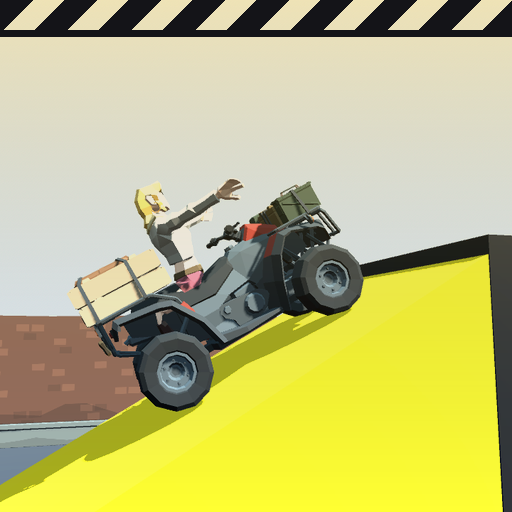

<- all projects

Stunt Double
PC
Volume
Live
Launch, flip, crash and land the director's money shot. The star takes the credit.
Jo "Crash" Okafor jumps when the action star jumps, and five films in, the poster still says his name. Read the director's shot list, pick a rig, set the power and ramp angle, and call action. Ragdoll physics and props that fly apart do the rest: bail at the right moment, tuck into flips, hit the mark and land in the airbag, or add a new injury to the Hall of Pain.